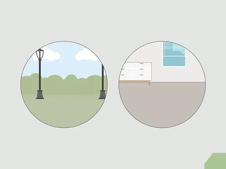
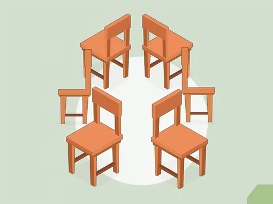
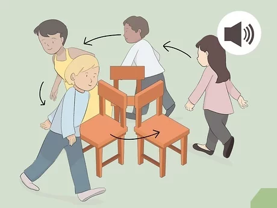
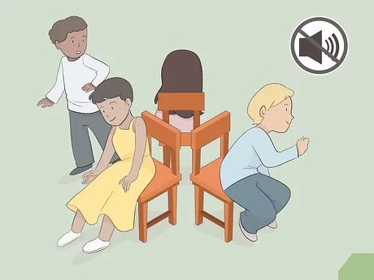
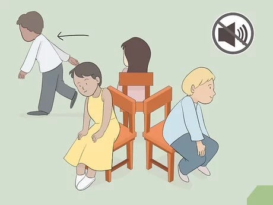
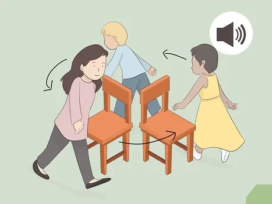
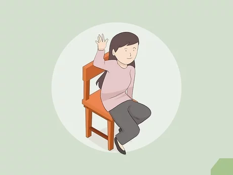
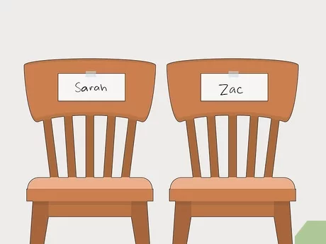
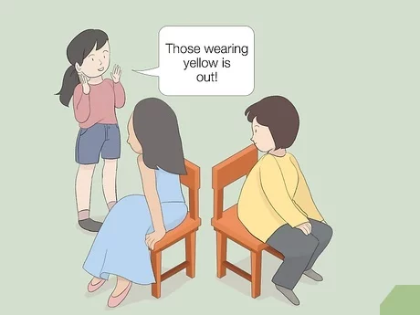
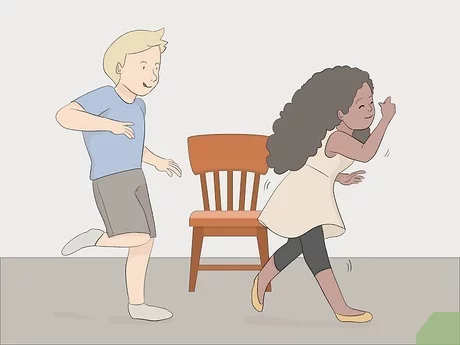

Musical chairs is a fun game to play with a group of friends. This traditional game is easy to play with a few simple supplies. You can play musical chairs at school, a birthday party, a club meeting, or just for fun with some of your friends. Once you learn the basics of musical chairs, you can try adding some variations to the traditional game for a fun, modern approach.
Download Instructions
For Saving Instructions Offline Click The Button Below
Musical chairs is played by walking around chairs to music. When the music is turned off the players find a chair to sit down in. You want music that has a good beat for walking. Using upbeat, party music will create a festive environment encouraging the players to have fun. Make a playlist of songs or pick an entire album of party music to use because the game may last more than one song if you have lots of players.
You need to have one person be in control of the music for each round of musical chairs that you play. This person will be responsible for starting and stopping the music.
2. Find a space to play.

Musical chairs is a game that needs a lot of space in order to play it. Make sure you have a wide open space in a room or outside to easily play the game. You need enough space to have chairs set up in a circle and room for the players to walk around the outside of them.
3. Set up chairs in a circle.

To play musical chairs, you need to have chairs or seats set up in a circle. You should start with one less chair than the amount of players playing. So for example, if there are 5 people playing, you should have 4 chairs in a circle.
Set up the chairs with the seat of the chair facing the outside of the circle.
If you don’t have chairs, you can use stools, carpet squares, or pillows instead.
4. Walk around the chairs when the music starts.

As soon as the music starts playing, the players walk in a circle around the chairs. You can choose whether to go clockwise or counterclockwise, but all players should go the same direction following the person in front of them.
Players should walk at a comfortable pace around the chairs without slowing down.
5. Find a chair to sit in when the music stops.

After some time, the teacher, or host should stop the music. When the music stops, each player needs to find a chair to sit down in. There will be one player left without a chair to sit in because there is one less chair than players.
6. Leave the game if you’re left without a chair.

The player that didn’t find a chair to sit it is out of the game. They can help run the music, or just watch the fun and wait to see who ends up as the winner.
7.
Remove one more chair and play again.

After the person who didn’t find a chair leaves the game, you need to remove one chair to play another round. Start another round by playing the music and having the players walk around the chairs again.
8. Continue playing rounds until there is one person left.

After each round of musical chairs, remove a chair, keeping 1 less chair the players in the circle. The last round will be 2 players and one chair. The player who sits in the chair this round is the winner.
9. Play musical chair ownership.

One fun variation on musical chairs is to play it by having players find specific chairs to sit in. Before playing, have the players use a nametag to put their name on a chair. Like traditional musical chairs, they walk around the chairs when the music plays, but when it stops, the players have to try and find the chair with their name on it to sit in. The last person to find and sit in their chair is out. Remove their chair and start again to play the next round.
For this version you will have the same number of chairs as players each round.
10. Add in new rules to each round.

You can make regular musical chairs more interesting by adding different rules to each round you play. For example, you might have the person who gets out become the music player after round 1, and then after round 2 the person who doesn’t find a chair gets to call out a color and anyone wearing it has to be out.
This is a fun way to have a game go more quickly when you have a lot of players.
You can come up with lots of different rules to try out.
11. Travel around the chair in a different way each round.

You can make musical chairs even more fun by having the players travel around the chairs in a different fashion each round. Having the players skip or crawl around the chairs will add another element of skill to the game. Make a list of different ways the players can travel around the chairs, and you can pick a different one each round.